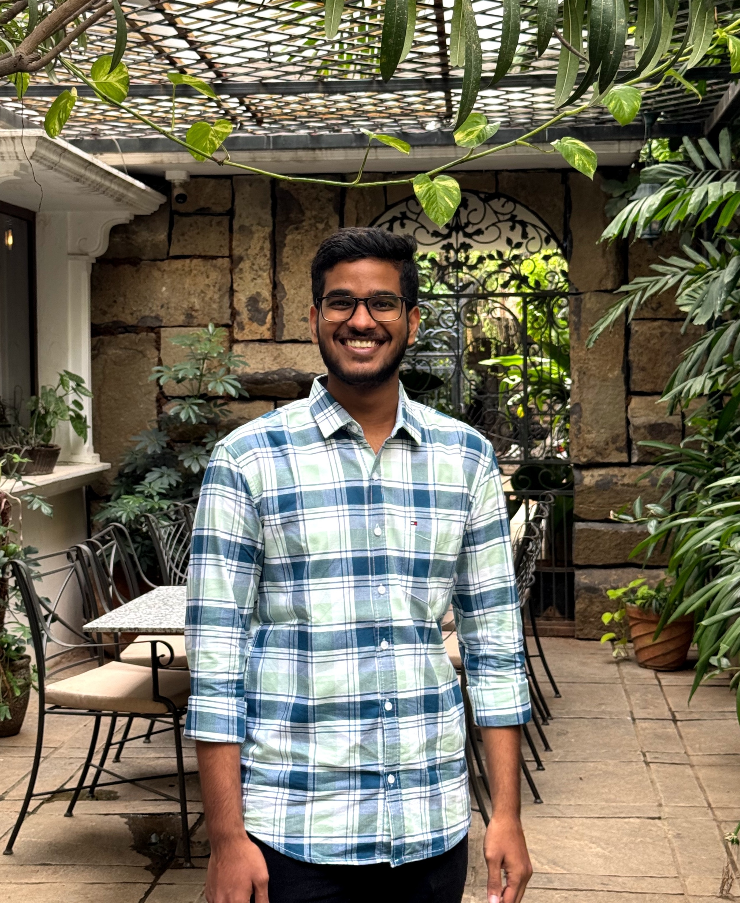

Engineering mathematically grounded, reliable intelligent systems.
AI/ML researcher and engineer investigating mathematically grounded machine learning, dynamical systems, and explainable intelligent architectures.

Research Trajectory & Themes
Investigating the intersection of continuous dynamical systems, explainable representations, and reliable machine learning.
Featured Research
Two complementary undergraduate investigations exploring spatial representations and continuous dynamics for network security.
Research & Dissemination
Research presentations, innovation exhibitions, and manuscript in preparation.
Experience & Applied Systems
Applied AI engineering across regulatory technology, fintech intelligence, and software systems.
Education & Distinctions
Formal undergraduate degree, verified professional certifications, scholastic olympiads, and university athletic honors.
About & Community
Let's Connect
I am preparing for Fall 2027 MS/PhD study focused on mathematically grounded, reliable, and explainable intelligent systems.